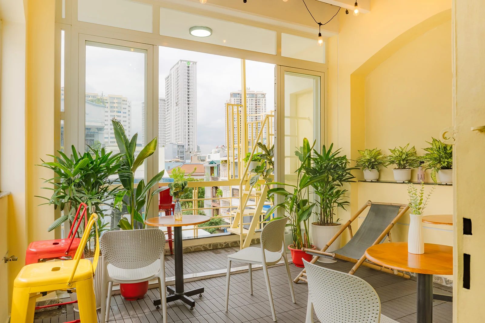

More than a bed
Your base between the adventures.
A rooftop to decompress, breakfast to start the day, and shared spaces where meeting people feels natural rather than forced.
Rooftop
Slow mornings. Easy evenings.
The rooftop is the hostel’s social heart: plants, city views, tables for breakfast or planning, and enough space to simply sit back after a full day in Saigon.
Meet people naturallyShared tables and open spaces without a party-hostel atmosphere.
Free breakfastStart the morning at the hostel before heading into the city.
Gym accessKeep your routine going between travel days.
Travel supportAsk the team about local plans, transport and tours.

Real hostel moments


The photos that matter most have people in them.

A typical day
Keep it simple.
01 · Morning
Breakfast
Start at the hostel, meet people and make a plan.
02 · Day
Explore Saigon
Walk, eat, tour or head out to Cu Chi and the Mekong.
03 · Evening
Come back up
Rooftop downtime, dinner plans and new travel friends.
04 · Night
Sleep
Return to an air-conditioned room away from the loudest party streets.